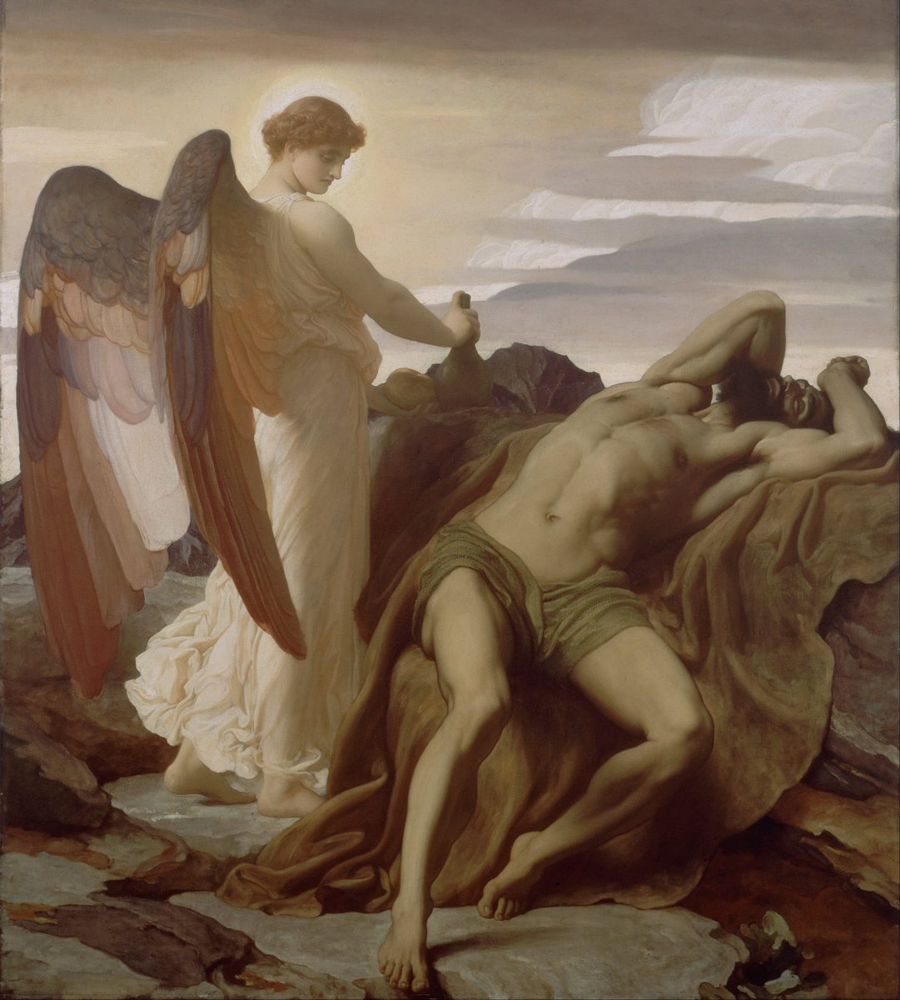

1 Kings 19 — The Mister Translation

1 Kings 19:5–6. Oil on canvas. The cake and the jug are there at his head, and the angel has come to touch him. The verse says a broom tree, and Leighton gives bare rock. The wings and the halo are the painter’s: the Hebrew word means a messenger, and it is the word for Jezebel’s.

Translator's Notes — verse by verse
“All that Elijah had done”. Ahab reports what Elijah did. The fire of Jehovah is not in the report. The verb is harag, “killed”, where the last chapter had shachat, “slaughtered” (1 Kings 18:40, now on these pages), and “with the sword” is new. The ASV has “slain all the prophets with the sword”, and the TLB has “slaughtered the prophets of Baal”, which says whose they were. The Hebrew has only “all the prophets”, and it reads strangely in a sentence told to the woman who cut off the others.
“So may the gods do, and so may they add”. This is Solomon’s oath at 1 Kings 2:23 (now on these pages), with one change: he swore by God, and both verbs here are plural, so she swears by the gods. Solomon also said “to me”, and she does not. The ASV and the KJV have “So let the gods do to me”, and the NWT 1984 has “So may the gods do”, tighter by two words. The TLB opens “You killed my prophets”, which she does not say. The Greek Bible in the Vaticanus tradition gives her an opening line of its own: “If thou art Eliu and I am Jezabel”.
“A messenger”. The word is malakh, and verses 5 and 7 use it for the one who feeds him, where this page has “angel”. Two messengers reach Elijah in this chapter, one to end his life and one to keep it going. “At this time tomorrow” gives him a day’s notice, and the text does not say why a queen who wanted him dead sent word first.
⭐ “Your soul”. The word is nefesh, and it stands seven times in this chapter: twice in verse 2, once in verse 3, twice in verse 4, and once each in verses 10 and 14. It is the word of the child’s “soul” that came back (1 Kings 17:22, now on these pages). The NWT 1984 has “soul” each time, and this page follows it, because the chapter is about one thing being passed from hand to hand. The ASV and the KJV have “life”.
⚠ “And he saw”. The Hebrew letters can be read two ways, “he saw” or “he was afraid”, and they differ only in the vowels. The vowels of the Hebrew text give “saw”. The ASV and the KJV have “when he saw that”. The NIV and the Douay have “was afraid”, the NWT 1984 “became afraid”, and the Greek Bible in the Vaticanus tradition “feared”. This page keeps the Hebrew as printed. What he saw, the verse does not say.
“Went for his soul”. The Hebrew, el-nafsho, stands in one verse of the Hebrew Bible. The ASV and the KJV have “went for his life”, and the NIV “ran for his life”, though the running was the last chapter. “Beersheba, which belongs to Judah” has the shape of “Zarephath, which belongs to Sidon” (1 Kings 17:9, now on these pages). Twice he has gone over a border, and Ahab’s kingdom stops behind him here. The young man of Carmel (1 Kings 18:43) stays behind, and Elijah goes on alone.
The broom tree. The word is rotem, a desert shrub, and the sense is not in doubt. The NIV has “broom bush”, and the NWT 1984 “broom tree”. The ASV, the KJV, the Geneva and the Douay have “juniper”, which is a different plant. At verse 4 the written Hebrew has the feminine form of “one” and the reading tradition the masculine (see ketiv / qere), and the translation follows the reading. A woman had sat down near here once: Hagar, in “the wilderness of Beersheba”, “under one of the bushes” (Genesis 21:14–15, now on these pages). An angel came to her as well.
⭐ “Enough!” The Hebrew, rav attah, “enough, now”, stands in three verses of the Hebrew Bible. One is Jehovah’s order to the destroying angel over Jerusalem, “Enough! Now let your hand drop” (2 Samuel 24:16, now on these pages), and another is its twin in 1 Chronicles 21:15. The word that stops an angel of death is the word Elijah uses to ask for one. “He asked for his soul to die” stands in two verses of the Hebrew Bible, here and at Jonah 4:8. Moses has the same prayer in other words (Numbers 11:15, now on these pages). The ASV and the KJV have “It is enough; now”, and the NIV has “I have had enough”. The TLB has “I’ve got to die sometime, and it might as well be now”, where the Hebrew has “for I am no better than my fathers”.
“An angel touching him”. The man who stretched himself on a child to bring back his soul is touched, and told to eat. It is the same word as Jezebel’s messenger. The Greek Bible in the Vaticanus tradition has only an unnamed someone at verse 5, and the Douay gives him his full title here, ahead of the Hebrew, which saves it for verse 7.
The cake and the jug. The word for the stones, retsafim, stands in one verse of the Hebrew Bible. The NWT 1984 has “a round cake upon heated stones”, and the ASV and the KJV “a cake baken on the coals”. The cake is ugah, what he asked of the widow (1 Kings 17:13), and the jug is tsappachat, her jug of oil (1 Kings 17:12, both now on these pages), and the one at Saul’s head on the night David took it (1 Samuel 26:11, now on these pages). The ASV and the KJV have “a cruse”, the NIV “a jar”, and the NWT 1984 “a jug”. Bread and water are what Obadiah gave the hundred in the caves, and a prophet in flight is fed the same way.
“For the way is too much for you”. “Too much” is rav again. He said “enough”, and the angel uses his word back to him. It is the first anyone has said of a way ahead, and he asked to die. The NIV has “the journey is too much for you”, and the ASV and the KJV “the journey is too great for thee”. The Douay and the Geneva have “a great way to go” and “a great journey”.
⭐ “Forty days and forty nights”. This is Moses’ number on this same mountain (Exodus 24:18; 34:28; Deuteronomy 9:9, now on these pages), and Jesus’ number in the wilderness (Matthew 4:2, now on these pages). “That food” is ha-akhilah, which stands in one verse of the Hebrew Bible. Moses ate no bread. Of Elijah the text says only that he went in the strength of what he had eaten. “The mountain of God, Horeb” is the phrase of Exodus 3:1 (now on these pages). Israel left that mountain for the land, and Elijah has walked the road in the other direction. The NWT 1984 has “the mountain of the [true] God”.
“The cave”. The Hebrew has the article. The ASV and the KJV have “a cave”, and so does the NWT 1984. The text does not say which cave it means. Moses at this mountain was put in a cleft of the rock (Exodus 33:22, now on these pages), which is another word, and the noun here is the one for Obadiah’s caves.
“What are you doing here, Elijah?” The Hebrew is mah-lekha foh, literally “What to you here?” It stands in four verses of the Hebrew Bible: twice here, once of the Danites questioning the Levite (Judges 18:3, now on these pages), and once in Isaiah 22:16. The ASV and the KJV have “What doest thou here”, the NIV “What are you doing here”, and the NWT 1984 “What is your business here”. Whether it is a reproach or an invitation, the words do not show.
⭐ “With zeal I have been zealous”. The Hebrew doubles the verb, qanno qinneti, and the pair stands in two verses of the Hebrew Bible, this speech and its repeat. The Douay has “With zeal have I been zealous”, which keeps the doubling, and this page follows it. The NIV has “very zealous”, the ASV and the KJV “very jealous”, and the NWT 1984 “absolutely jealous”. The TLB has “I have worked very hard”, which is another claim. This is the word of Phinehas, who “was zealous for his God” with a spear in his hand (Numbers 25:13, now on these pages; see qanna).
⚠ What he says has happened. He says the sons of Israel have forsaken the covenant, torn down the altars and killed the prophets with the sword. The last chapter had Jezebel cutting off the prophets (1 Kings 18:4) and the sons of Israel on their faces crying “Jehovah, he is God!” (1 Kings 18:39, both now on these pages). The one killing “with the sword” these chapters have reported is at verse 1 of this one, and Elijah did it. The text does not correct him. Paul quotes the speech (Romans 11:3, now on these pages). The NIV has “torn down your altars”, and the NWT 1984 “your altars they have torn down”, which keeps the Hebrew order.
“I am left, I alone”. The word is levaddi, as on Carmel (1 Kings 18:22, now on these pages), and Obadiah’s hundred are still not counted. “They are seeking my soul, to take it” uses the verb of verse 4, “take my soul”. Forty days ago he asked Jehovah to do what he now complains that others are trying to do. The ASV and the KJV have “to take it away”, and the NIV “they are trying to kill me too”, which loses the echo. The Greek Bible in the Vaticanus tradition has “forsaken thee” here and “forsaken thy covenant” at verse 14.
“Jehovah was passing by”. The verb is avar, the verb of Moses in the cleft: “while my glory passes by” (Exodus 33:22), “And Jehovah passed before him” (Exodus 34:6, both now on these pages). Mark uses the picture on the lake (Mark 6:48, now on these pages). The NWT 1984 has “Jehovah was passing by”, and the ASV “Jehovah passed by”. The NIV has “about to pass by” and puts it inside the command, and the Greek Bible in the Vaticanus tradition does the same and adds “to-morrow”. The Hebrew participle allows the reading and does not require it.
⭐ “Jehovah was not in the wind”. Wind, earthquake and fire are the signs of this mountain: “Jehovah had come down on it in fire … and the whole mountain trembled greatly” (Exodus 19:18, now on these pages). Three times the Hebrew says it in three words with no verb, “not in the wind Jehovah”. The fire is the sharpest of them, because a chapter ago “the fire of Jehovah fell” (1 Kings 18:38, now on these pages). Ruach is also the word Obadiah feared, “the spirit of Jehovah will carry you” (1 Kings 18:12, now on these pages). The ASV has “rent the mountains, and brake in pieces the rocks”, and the NWT 1984 “rending mountains and breaking crags”.
⚠ “A voice of thin silence”. The Hebrew is qol demamah daqqah, and it is among the most argued phrases in Kings. Qol is “voice”, the word that failed the prophets of Baal twice and came back as the rain (1 Kings 18:41, now on these pages). Demamah is silence or stillness. It stands in three verses of the Hebrew Bible: here, the storm stilled at Psalm 107:29, and “silence and a voice” at Job 4:16. Daqqah is “thin”, the word of the thin ears in Pharaoh’s dream (Genesis 41:6, now on these pages).
The shelf hears something gentle. The ASV and the KJV have “a still small voice”, the Geneva “a still and soft voice”, the NIV “a gentle whisper”, the TLB “the sound of a gentle whisper”, the NWT 1984 “a calm, low voice”, and the Douay “a whistling of a gentle air”. The Greek Bible in the Vaticanus tradition has “the voice of a gentle breeze”. Each of them makes it a soft sound. The Hebrew joins a word for sound to a word for no sound, and this page keeps the join. It may be a very quiet noise, or a silence you can hear. The verse does not say that Jehovah was in it, either.
“He wrapped his face in his mantle”. Moses hid his face at this mountain (Exodus 3:6, now on these pages). The word is adderet, and this garment has more to do at verse 19. The ASV and the KJV have “mantle”, the NIV “cloak”, the TLB “scarf”, and the NWT 1984 “official garment”. He was told at verse 11 to go out. Wind, earthquake and fire did not bring him out, and this did.
⭐ The same question, and the same answer. The voice asks what the word asked at verse 9. Verse 14 repeats verse 10 letter for letter in the Hebrew. After the wind, the earthquake, the fire and the silence, he has not changed a word. The chapter does not comment, and Jehovah does not argue with him. He gives him an errand. The TLB varies the second speech, “I have been working very hard”, and hides the repeat.
“Go, return on your way”. The answer to the complaint is work. He is sent north past the country he fled, to the wilderness of Damascus, to anoint a foreign king. The NIV has “king over Aram”, and the ASV and the KJV “king over Syria”. The prophet of Israel is to anoint a man who will do Israel great harm (encyclopedia).
⚠ Three anointings, none of them as ordered. Elijah is told to anoint three men. In Kings he does not anoint any of them. Elisha gets a mantle at verse 19, Hazael hears his future from Elisha at 2 Kings 8:13 (now on these pages), and one of the sons of the prophets anoints Jehu at 2 Kings 9:1–6 (now on these pages). Readings differ: some take the task as passed on through Elisha, and the text does not explain.
“Jehu son of Nimshi”. 2 Kings 9:2 (now on these pages) calls him son of Jehoshaphat son of Nimshi. The NWT 1984 has “the grandson of Nimshi”, which reconciles the two. The Hebrew here has ben, “son”, and the ASV and the KJV have “the son of Nimshi”. The house of Jehu has its own judgment later (Hosea 1:4, now on these pages).
“In your place”. The man who said “take my soul” is told who comes after him. The ASV and the KJV have “in thy room”, the NIV “to succeed you”, and the TLB “to replace you”. “Of Abel-meholah” is a place the Midianites fled toward (Judges 7:22, now on these pages).
“The one who escapes”. “With the sword”, he complained, and the sword comes back in Jehovah’s answer, twice, in Hazael’s hand and in Jehu’s. Elisha is the third, and the verse does not say how a prophet would do this. The ASV and the KJV have “shall Jehu slay”, and the NIV and the NWT 1984 “put to death”.
⭐ “And I will leave in Israel seven thousand”. This is the answer to “I alone”. The Hebrew form, vehish’arti, reads as a future here. The ASV has “Yet will I leave me”, and the Geneva “Yet will I leave”. The KJV has “Yet I have left me”, and the NWT 1984 “I have let seven thousand remain”, a past. The NIV has “Yet I reserve”, and the TLB “there are 7,000 men”. The Greek Bible in the Vaticanus tradition has “thou shalt leave”, and Paul has “I left for myself seven thousand men” (Romans 11:4, now on these pages). The Hebrew has no “me” and no “men”.
“Every mouth that has not kissed him”. The knee and the mouth stand for the two acts of worship. Hosea 13:2 has men kissing calves, and at Job 31:27 a mouth kisses a hand toward the moon. The Douay has “every mouth that hath not worshipped him kissing the hands”, which brings the Job picture in. Hold on to the verb, because it comes back in two verses.
“And he with the twelfth”. The article on the numeral, bi-shneim he-asar, stands in two verses of the Hebrew Bible, here and at Joshua 4:4 (now on these pages). The number is the number of Elijah’s stones (1 Kings 18:31, now on these pages). Twelve yoke are a large farm or a shared field, and the verse does not say which. The ASV and the KJV have “he with the twelfth”, the NIV “driving the twelfth pair”, and the TLB “eleven other teams ahead of him”.
⭐ “Elijah passed over to him and threw his mantle on him”. “Passed” is avar, the verb of Jehovah on the mountain at verse 11. The ASV has “passed over unto him”, the KJV “passed by him”, the NWT 1984 “crossed over to him”, and the NIV “went up to him”. He was told to anoint, and there is no oil. He says nothing at all. The mantle that covered his face at the mountain lands on a plowman, and it will be in Elisha’s hands for good at 2 Kings 2:13 (now on these pages). The TLB adds “and walked away again”.
“Please let me kiss my father and my mother”. The verb is the one of verse 18. Seven thousand mouths have not kissed Baal, and the first thing this one wants to kiss is his father. The ASV and the NIV keep “kiss”, and the TLB has “say good-bye”. A man asks Jesus the same favour, “first permit me to say farewell to those at my house”, and gets the plow for an answer (Luke 9:61–62, now on these pages).
⚠ “Go back, for what have I done to you?” This line can be read as permission, as a rebuke, or as a reminder that something has been done to him and he should think what. The ASV and the KJV have “Go back again: for what have I done to thee?”, and the NIV has it as two sentences. The Douay has “for that which was my part, I have done to thee”, and the Greek Bible in the Vaticanus tradition “for I have done a work for thee”, which take it as a statement. The TLB has “Why all the excitement?”, which is not in the Hebrew. This page keeps the question.
“And sacrificed them”. The verb is zavach. The NWT 1984 has “sacrificed”, which is the verb’s usual sense. The ASV and the KJV have “slew”, and the NIV “slaughtered”. “The equipment of the oxen” is Araunah’s phrase, when he offered David his threshing gear for firewood (2 Samuel 24:22, now on these pages). The Hebrew does not say “burned”, though boiling meat with a yoke can mean little else. The NIV has “burned the plowing equipment”, and the Douay “with the plough of the oxen”. He has left himself nothing to go back to, and the people ate with him.
“And ministered to him”. This form of sharet stands in one verse of the Hebrew Bible. It is Joshua’s word: “Moses rose, with Joshua his minister” (Exodus 24:13), “Moses’ attendant” (Joshua 1:1, both now on these pages). Elijah has gone to Moses’ mountain and come back with a Joshua. The ASV and the KJV have “ministered unto him”, the NIV “became his servant”, and the TLB “as his assistant”.
Patterns worth carrying forward
Where this translation keeps the words exact and distinct: “messenger” and “angel”, one word, said so in the note; “soul” for nefesh, all seven times; “he saw”, as the Hebrew is printed; “broom tree”, not juniper; “Enough!”, as in 2 Samuel 24:16; “too much”, the same word; “a cake” and “a jug”, as for the widow; “the cave”, with the article; “With zeal I have been zealous”, with the doubling; “I alone”; “take”, of Elijah’s soul, twice; “passing by” and “passed over” for avar; “a voice of thin silence”; “mantle” for adderet; “Aram”; “I will leave”, a future; “kiss”, of Baal and of a father; “sacrificed”; “the equipment of the oxen”; and “ministered”, Joshua’s word. The written and read Hebrew are recorded at verse 4.
Echoes paid. “I alone” and the altars torn down (1 Kings 18:22, 30); Ahab telling Jezebel (1 Kings 18:46 note); the sword after the slaughter (1 Kings 18:40); the oath of 1 Kings 2:23; the soul that came back (1 Kings 17:22); “which belongs to” (1 Kings 17:9); Hagar at Beersheba (Genesis 21:15); “Enough!” (2 Samuel 24:16); the cake and the jug (1 Kings 17:12–13; 1 Samuel 26:11); forty days and forty nights (Exodus 24:18; 34:28; Deuteronomy 9:9; Matthew 4:2); the mountain of God (Exodus 3:1); zeal (Numbers 25:11–13); the one who passes by (Exodus 33:22; 34:6; Mark 6:48); the fire on the mountain (Exodus 19:18; 1 Kings 18:38); the hidden face (Exodus 3:6); the mantle (Joshua 7:21 note); seven thousand (Romans 11:3–4); twelve (Joshua 4:4; 1 Kings 18:31); the equipment of the oxen (2 Samuel 24:22); and Moses’ minister (Exodus 24:13; Joshua 1:1).
Echoes planted. Hazael told that he will be king (2 Kings 8:13, now on these pages) and Jehu’s anointing (9:1–6); the mantle in Elisha’s hands (2 Kings 2:13, now on these pages); the spirit that carries off (2 Kings 2:16, now on these pages); and the silence of Job 4:16. None of the others is translated here yet.
Next in this book: 1 Kings 20 — Ben-hadad of Aram comes against Samaria with thirty-two kings; an unnamed prophet promises Ahab the victory, twice; and Ahab lets Ben-hadad go, and a prophet in disguise tells him what that will cost.